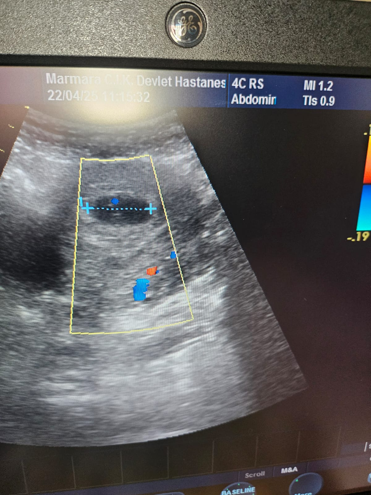

“Annem Olacağın İçin Teşekkürler”

Sevgili Annem,
Henüz birbirimizi tam olarak tanımasak da, kalp atışını hissedebiliyorum. Beni sabırla, sevgiyle taşıdığın her gün için sana şimdiden teşekkür ederim.
Seninle geçireceğimiz ilk anı, ilk sarılmayı ve göz göze geleceğimiz o günü dört gözle bekliyorum. Senin gibi güçlü, sevgi dolu bir annenin çocuğu olacağım için çok şanslıyım.
Lütfen kendine iyi bak, çünkü sen iyiysen ben de iyiyim. Seni çok seviyorum, daha doğmadan.
Hep seninle,
Bebeğin
Bebeğin